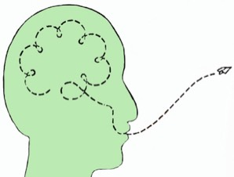

Relieve. Quiet. Lighten.
See Judy on
Buddha At The Gas Pump
Judy Cohen offered a mind-blowing, innovative way to uncover the true, not-broken You that has been there all along. Using the struggles of the everyday as an entry place, Judy helped you get out of the way and discover something… bigger.
This was a not-therapy, not-inquiry, not-the-usual-ways approach that changes things.
Judy Cohen tricked the mind. Confused it.
On purpose.
She gave mind something to figure out and solve, and while it was busying itself with that, Judy quietly took clients to a whole new place, one of shift, relief, freedom.
Using a very large methodology toolbox, built on many years of intense professional training and practical experience working with countless clients,
Judy combined her own special blend of mind-blowing questions with sharp intuition and a piercing ability to see through and disrupt mind's lies.
When people brought their belief in suffering to Judy Cohen, it went away. Quietly. Poof.
Hurting went the same way it showed up to begin with: on its own.
The seeking game could end.
Judy's clients could finally integrate the vastness of consciousness with the limitations of personality.
Her approach was unique, radical and followed globally by thousands.
Throughout this website you'll find testimonials from people around the world whose lives have been changed significantly for the better after working with Judy.

"It's weird. It went quiet. You keep frying my brain. In a good way." —Norway
“I make major shifts when I work with you.” —Utah
"I have done Inquiry for years. It never touched this black cloud of depression and anxiety. After two sessions I felt a shift and I am feeling lighter, not black. Something has happened. I don't understand it. But it's better. A lot better. I'm overcome with relief and gratitude." --New Mexico
“you help me all the time, following me around with this little Judy-voice in my head, like I can hear you helping me.”
— Maryland
“I make major shifts when I work with you.” —Utah
"I have done Inquiry for years. It never touched this black cloud of depression and anxiety. After two sessions I felt a shift and I am feeling lighter, not black. Something has happened. I don't understand it. But it's better. A lot better. I'm overcome with relief and gratitude." --New Mexico
“you help me all the time, following me around with this little Judy-voice in my head, like I can hear you helping me.”
— Maryland
"You are a wicked clear conduit."
—Costa Rica
"Nothing I've tried before has been as profound as the experience I had with you. Thank you for something miraculous." --Florida
—Costa Rica
"Nothing I've tried before has been as profound as the experience I had with you. Thank you for something miraculous." --Florida
"It was a breakthrough working with you. Big stories are falling 'down'." -- Denmark

“I dont know what you did but you bypassed my mind in Group tonight! I’m totally blissed out right now; the depression has lifted… I don’t even know what happened.” —New York
“you’re doing a very radical inquiry and I LOVED it.”
—Dubai
—Dubai
"Judy is a genius. Better than any therapist!
She has a unique way of looking at things that opens up possibilities that may not have occurred before."
—London, on Facebook
She has a unique way of looking at things that opens up possibilities that may not have occurred before."
—London, on Facebook
"I have an odd sense of calm. I keep waiting for it to go away, but it keeps lingering. I feel less burdened, less afraid, stronger, and calmer. It's a bit of a miracle."
-- England
-- England
"Your work has helped me tremendously! There's no words for it. It moves me out of this personna."
—New Jersey
—New Jersey
"Loving judy's inimitable reflections. Grateful for her unabashed (yet loving) clarity.<3"
—Vermont
“Thank you for helping me. Everything on the outside is the same, but my experience has gone from angry, ashamed, resentful and fearful, to free.” —Guam